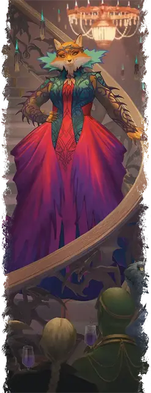

Шемешка
Shemeshka
Среднее Исчадие (Юголот), нейтрально-злое, именной НИП

Класс Доспеха 17 (природный доспех)
Хиты 162 (25к8 + 50)
Скорость 30 футов, летая 30 футов (парит)
| мод | спас | ||
|---|---|---|---|
| СИЛ | 20 | +5 | +5 |
| ЛОВ | 14 | +2 | +7 |
| ТЕЛ | 14 | +2 | +2 |
| мод | спас | ||
|---|---|---|---|
| ИНТ | 21 | +5 | +10 |
| МДР | 16 | +3 | +8 |
| ХАР | 18 | +4 | +9 |
Навыки Восприятие +8, Обман +9, Проницательность +8
Сопротивление урону огонь, холод, электричество; немагический дробящий, колющий, рубящий
Иммунитет к урону кислота, яд
Чувства истинное зрение 120 футов, пассивное Восприятие 18
Языки Все, Телепатия 120 фт.
Опасность 14 (11500 опыта)
Бонус мастерства +5
Особенности
Легендарное сопротивление (4/день). Если Шемешка проваливает спасбросок, она может вместо этого сделать спасбросок успешным.
Сопротивление магии. Шемешка совершает с преимуществом спасброски от заклинаний и прочих магических эффектов.
Особое снаряжение. Шемешка носит магическую корону, называемую Бритвеннолозая диадема. В руках любого, кроме Шемешки, Бритвеннолозая диадема функционирует как жезл щупалец [tentacle rod], наносящий рубящий урон вместо дробящего.
Действия
Мультиатака. Шемешка использует Поток магии или Использование заклинаний. Она совершает одну атаку Когтём или Бритвеннолозой диадемой.
Поток магии. Шемешка вызывает всплеск магической энергии вокруг одного существа, которое она может видеть в пределах 120 футов. Цель должна совершить спасбросок Ловкости Сл 18. При провале цель получает 45 (7к12) урона силовым полем и становится недееспособным до конца своего следующего хода. При успехе цель получает только половину этого урона.
Когти. . Рукопашная атака оружием: +10 к попаданию, досягаемость 5 футов, одна цель. Попадание: 10 (2к4 + 5) рубящего урона плюс 14 (4к6) урона ядом.
Бритвеннолозая диадема. . Рукопашная атака оружием: +10 к попаданию, досягаемость 15 футов, одна цель. Попадание: 10 (3к6) рубящего урона плюс 9 (2к8) урона некротической энергией. Если целью является существо, оно должно преуспеть в спасброске Телосложения Сл 15, иначе его скорость уменьшается вдвое, и оно с помехой будет совершать броски атаки и спасброски до конца своего следующего хода.
Использование заклинаний. Шемешка накладывает одно из следующих заклинаний, не нуждаясь в материальных компонентах, используя Интеллект в качестве базовой характеристики (Сл спасброска заклинания 18):
• Неограниченно: смена обличья [alter self], тьма [darkness], невидимость [invisibility] (только на себя), волшебная рука [mage hand], фокусы [prestidigitation]
• 2/день каждое: обнаружение мыслей [detect thoughts], переносящая дверь [dimension door], внушение [suggestion]
• 1/день каждое: изгнание [banishment], связь с иным миром [contact other plane] (действием), сокрытие разума [mind blank]
Бонусные действия
Телепорт. Шемешка телепортируется вместе с любым снаряжением, которое она несёт или носит с собой, на расстояние до 60 футов в незанятое пространство, которое она может видеть.
Реакции
Ослабляющее контрзаклинание (3/день). Шемешка произносит магическое слово, пытаясь прервать заклинание, накладывание которого она видит. Если заклинание 5-го уровня или ниже, заклинание проваливается и не оказывает никакого эффекта. Если заклинание 6-го уровня или выше, Шемешка совершает проверку Интеллекта (Сл 10 + уровень заклинания). В случае успеха заклинание проваливается и не оказывает никакого эффекта. Каким бы ни был уровень заклинания, заклинатель становится отравленным до конца своего следующего хода.
Описание
Шемешка - арканалот, один из самых амбициозных и печально известных криминальных авторитетов Сигила. Из своего мультипланарного казино "Колесо Фортуны" она манипулирует секретами и судьбами на разных уровнях.